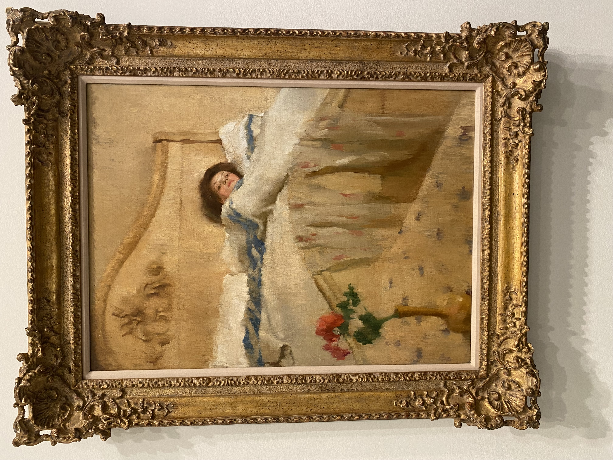
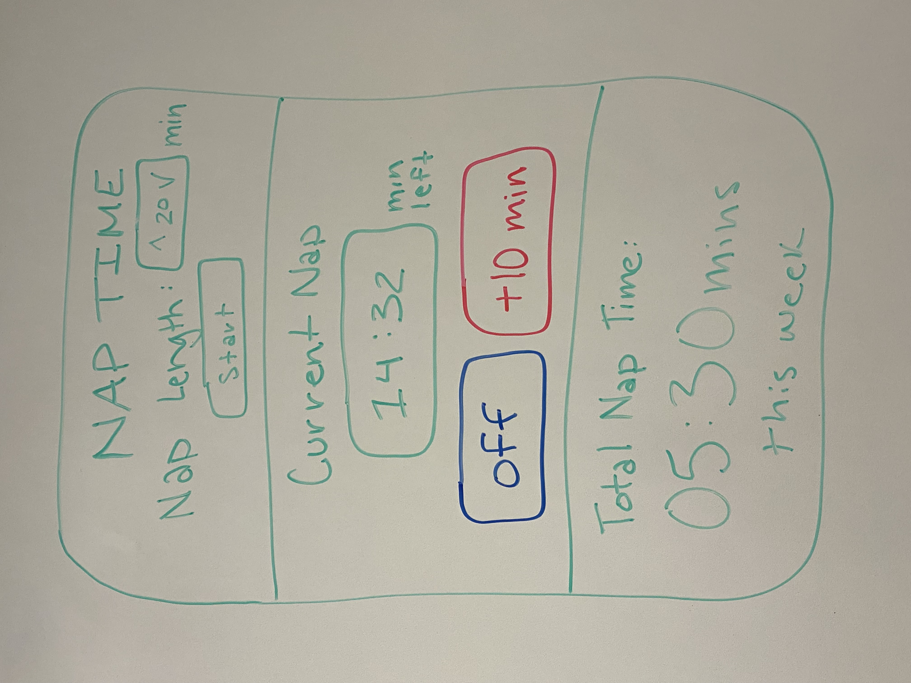
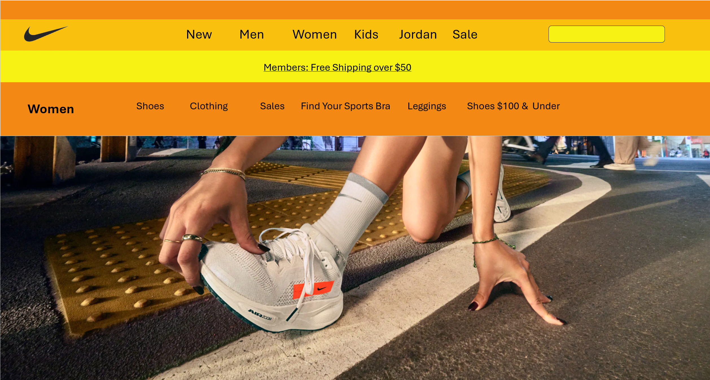
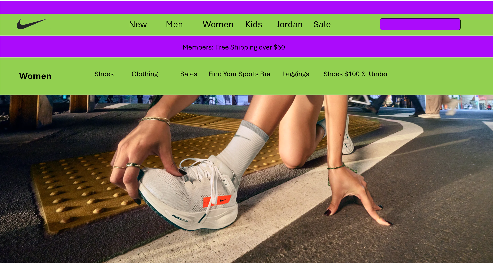
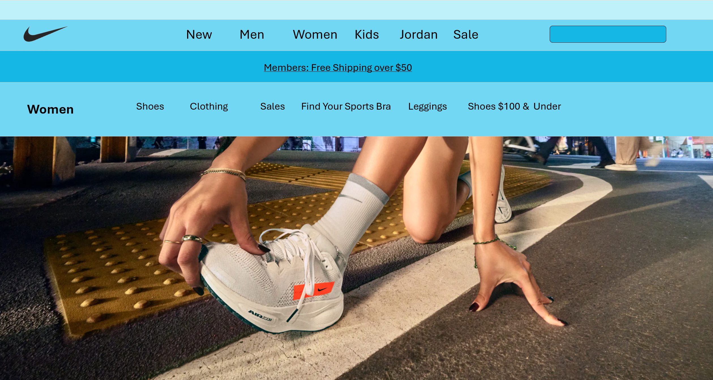
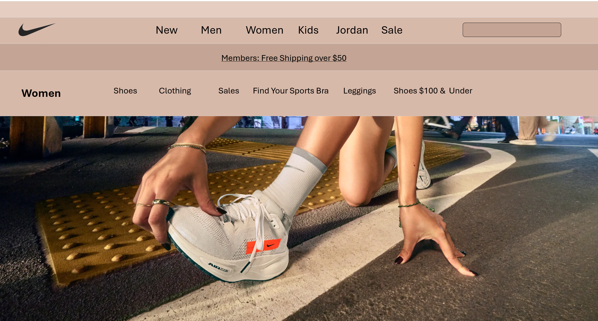

Let's Explore!
Making of My Portfolio
November 29, 2024
Clean, intuitive navigation: I integrated a clean an intuitive navigation through my use of colors and through my navigation bar at the top. The navigation bar displays all of the possible pages of a viewer to go to and the page that the viewer is currently on has a white text color on top of the blue background.
Intentional color choices: I chose the color blue because I believe it best represents me as a person. Blue gives off feeling of cool, calm, and clean and that is the mood I want to give off to viewers. I also worked to ensure that the text would be readable through the use of different shades or blue in addition to both white and blue text colors.
Harmony between affordances and signifiers: There is a clear harmony between affordances and signifiers as perceived actions do result in the expected action. One example of this is when you hover over a page button, it changes color indicating to the user that they can travel there. Then, when clicked they are taken to that specific page.
Some consideration to accessibility (e.g., use of HTML header tags, alt text, etc.): In terms of accessibility, the page tab is always set to “Jillian Weland Portfolio” but if you look at the url, the html is set to the page name of the page the user is on. In addition, in the navigation bar the page name that the user is on is in white font.
Usability elements to help make content easier to digest (bulleted lists, pagination, expandable blocks, headings, etc.): The pages inside of my portfolio are pretty split up in terms of content. There are multiple tabs to make it clear what information is held where. In addition, each project or blog is further split up but across each tab, the format is very similar allow for easy reading by the user.
Evidence of evolution (I started there, but I learned some stuff, and now I'm here): I think evolution of my portfolio can be best seen through the creation of new pages. As I added content, I realized that I would need to divide out the information to best showcase all the work I have done.
Proper attribution of others' work (especially in your reading reflections): To properly attribution the work of others, I included MLA citations of the source that I utilized for each Blog post I created.
Intentional integration of your values: The values I would to integrate into my portfolio included clarity and cleanliness. I make sure that my site was not overwhelming to the user and that information could be easily found.
UIUN Conference
November 11, 2024
For my UIUX class, we conducted an exercise called UIUN conference which was an accessibility workshop intended to get us students to begin thinking about the UI accessibility needs of a specific population. My population was Baby Boomers. After creating presentation about the needs of our respective population, we were tasked with meeting with all other populations to determine the most appropriate needs for the election website we would design. At the beginning we all put down requirements, with ranks, of our populations. Next, we went through all of the requirements of all populations and would ask to sign with the requirement if it was something your population would support. From there, we then needed to, as a class, determine the most important needs of all populations and negotiate to determine what the final needs necessary requirements of the website would be.
The baby boomers had a lot of needs that aligned well with other populations. I learned that many of the needs of baby boomers were associated with their age as they could have poorer vision, hearing, movement, and in addition they could have a lack of experience with technology. Because of all this, the needs I have included descriptive instructions, large and clear to read text, error handling, saved progress on forms, contact information for help, and high color contrast on pages.
The main recommendations that I fought strongly for were the priority of the form fields and specifically those forms saved throughout completion of them and that there was easy navigation across the website with breadcrumbs and etc. Because of the general needs and lots of crossover between my population and others, a lot of my requirements were voiced by other parties, allowing me to focus on the navigation and form needs. When the convention was tasked with shrinking the number of requirements that we could actually pass, we found ourselves making some requirements more general so that they could be merged with others. Or sometimes a simple requirement would become more of a laundry list of items so that we could get more out of one bill. Others times though, if a population was not very vocal for their requirements, the requirement they would want would get priority. I think one unlikely ally was young voters, which seemed unlikely because of the large gap in terms of age between my population and that population. Another group that I got along well with was anxiety. I worked with these groups because we both placed an emphasis on explanations on ways to get help. We also worked on making sure that progress was saved and that forms were easy to understand and follow. One of the harder groups for me to convince was Dyslexia because they were very focused on getting text-to-speech integrated into the website whereas this was not as large of a need for me.
It felt bad to prioritize some needs over others because it feels like you are counting people out. I was hard to also fight for my population sometimes because it felt like I was saying that my population was more important that other populations.
My greatest takeaway from the Summit was that it is important to consider all the needs of people who will be experiencing and utilizing your website. Even though it is very hard to make everything perfect, it is important to try to fulfill the needs of as many people as possible. I will take this forward with me as I build more websites and ensure they are as user-friendly as possible.
Finding Inspiration
October 01, 2024
Introduction: I visited the Sheldon Art Museum found on UNL’s campus and enjoyed the surrounding art pieces looking for one that truly caught my eye. This is when I found the following:
The Convalescent by Lillian Westcott Hale

Art Analysis:
Color Scheme: The first aspect of the artwork that spoke to me was the color scheme, and more specifically the red rose and blue strips on the blanket. The overall color of the artwork is very neutral with lots of browns and golds. The red rose sticks out strongly on this background and draws the viewer’s eye. In addition, red and blue are very contrasting colors, the most possible, and makes the rose stand out even more. This was a smart move by the artist because another colored flower would not have the same emphasis.
Rule of Thirds: The artwork follows the rule of thirds very well and is nicely divided in the vertical aspect. The top third is the top of the room and a brown color, the middle is the white blanket, and the bottom is the area closet to the viewer with more brown tones. In addition, the are two very strong power points in this artwork. First, there is the red rose at the bottom left power point which draws the eye. Secondly, the woman’s face is located at the top right power point which is what caught my eye next. This design makes the artwork very engaging and intriguing to look at.
Tension: The artwork also displays a lot of tension because of a combination of the elements above. The red and blue are distressing for viewers so that already create a tense viewership. Next, there is tension between the flower and the woman. One principle I have learned is that people follow the eyes of humans in artwork. In this piece, the woman initially feels like she is looking towards the flower but upon closer inspection, she is looking off at nothing and in the distance. I think this truly encapsulates what the piece is about as the flower is bright and lively and the woman seems paler and disconnected to the life around her. This distress between the two power points captures my attention and I can feel the internal struggle of the woman lying in bed.
"Tension." Encyclopaedia Britannica, Encyclopaedia Britannica, Inc. Accessed 1 Oct. 2024, https://www.britannica.com/art/tension-art.
My UI Design:
Looking at this woman lying in a bed began to make me a little sleepy. I made a “Nap Time” app sketch that would encapsulate all of the design principles that I found within Hale’s piece.

The purpose of the app is to allow the user to create “naps” and an alarm will go off when their nap length is over. This then also tracks how much they napped in a week. The app would be used on a phone like the Clock app currently found on the IPhone. The first element included in the app is the rule of thirds. While it was difficult to create power points in the app, I was able to split the app into thirds vertically like the artwork. Next and more apparent is the contrasting color scheme with the blue and red. These two colors will wake a user up because of how harsh the contrast is. This element then ties nicely with the tension element. When a user wakes up from a nap, they will always feel the tension between turning their alarm off and begging for 10 more minutes. This is observed between the red and blue button situated closely together showing both options.
Color Study: Nike
September 05, 2024

Color Scheme Analysis: Nike’s website utilizes an achromatic color scheme meaning that the use only black, gray and white in their design. The only pop of color found on the website is from the picture on the bottom two thirds of the screen. Within this picture, there is an even brighter pop of orange on the shoe, which also conveniently displays Nike’s logo. The achromatic color scheme gives the website a subtle, modern feel to it. I believe that Nike designed the page like to really emphasis and give attention to the picture of the shoe. They want users to focus on the product they are trying to sell and not the different tabs and navigational features of the website. I believe this is a very effective strategy because my eye is immediately drawn to the picture and the shoe. Even if I was going on the website to look for something specific, I am now also interested in looking into this shoe. The basic layout makes it simple for me to navigate to whatever I am searching for, reducing the need for color emphasizes on tabs and bars.
Creating Unique Color Schemes

Color Scheme Analysis #1 Remake: For the first color scheme analysis, I changed the scheme to fit an analogous color scheme which is any three consecutive shades on a color wheel. In this case, I used orange, yellow-orange, and yellow as the three shades. I specifically chose this to match with the orange tab on the shoe. Unfortunately, the orange color on the shoe is brighter so it doesn’t exactly match but the overall color range is similar. The mood of this pattern is bright and energetic. It gives the feel of warm and bright but not necessarily overpowering. I think the designer would hope for the user to feel ready to take on the day with a new pair of shoes or other Nike apparel.

Color Scheme Analysis #2 Remake: For the first color scheme analysis, I changed the scheme to fit a clash color scheme which mixing a color with the color to the left or right of its complement on the color wheel. In this case, the colors I mixed were green and purple. The feel of this design is disorganized. The color clash is not very soft on the eyes and distracts from anything else on the screen. In addition, purple with black text is not the easiest to read. The mood given off is hectic and does not draw attention to the product that Nike is trying to promote.

Color Scheme Analysis #3 Remake: For the first color scheme analysis, I changed the scheme to fit a monochrome color scheme which is using different shades of the same color. For the monochrome color, I chose to use blue because I thought it could give off a cool vibe that it seems like Nike strives the have. I believe that this color scheme does effectively give off a chill vibe because of the blue and is not too overwhelming. A monochrome scheme allows for the colors to not be too contrasting and as a result lets the user focus on other details such as the picture. In addition, monochrome and achromatic are similar in terms of effect/lay out so it makes sense that this design flows well with the overall design and feel of the website.

Color Scheme Analysis #4 Remake: For the first color scheme analysis, I changed the scheme to fit a neutral color scheme which uses neutral shades and tone. It is somewhat comparative to a monochrome look as well. I decided to create a look using these tones because I thought similarly to the original design, it could give a sleek and modern look. The user would feel down to earth but also have a calming presence. This color scheme would go well with a variety of pics meaning Nike could update their website frequently. In addition, the color scheme fits well into the background and your eye is still draw to the picture and focal point of the website. It allows users to carry on with their searching and shopping experience and not get distracted by the design of the website.
Effectiveness:
Out of all the color scheme remakes, I would rank them on effectiveness in the following order with the first being the most effective: 4, 3, 1, 2. For Nike’s website, the most effective experience would have the picture be the focal point of the website while having a color scheme that does not draw away from the navigability of the website and I believe 4 best does this. The neutral scheme is very similar to the original in the fact that they both give a modern appeal that does not take away from the website and rather complements it. While 3 and 1 both had acceptable schemes, they still took away too much attention from the picture and the website. 2 was a very bad design and would not give the user a very enjoyable experience at all. The calming tone of the neutral color scheme would also give shoppers a more laid back and lighter experience with a modern appearance rather than something flashy that including more colors would have. While I believe that the original is still the best design, I don’t think Nike could go wrong with a color scheme similar to 4.